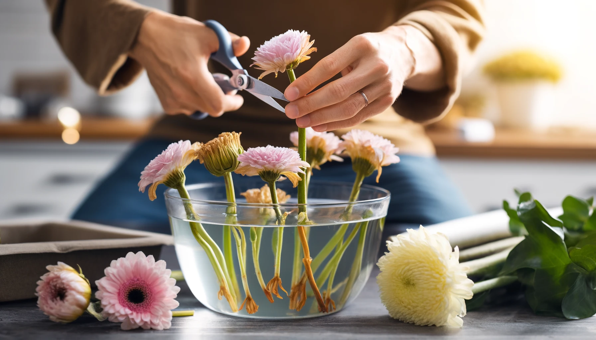
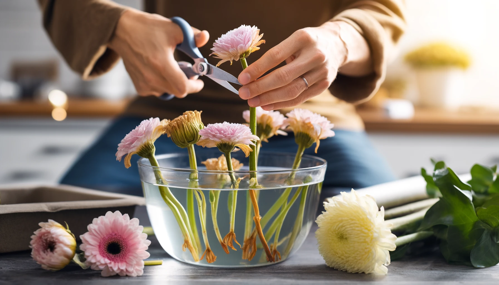

Extend the Life of Your Bouquets: Six Expert Tips
Published on April 16, 2024 | Hiyas Flowershop
Transform your space with vibrant, fresh flowers that stay beautiful longer. Here are six expert tips to ensure your bouquets maintain their splendor and vitality, keeping your home cheerful and fragrant for an extended period.
1. Choose Freshness First: The key to a lasting bouquet starts at selection. Opt for flowers that are just about to bloom and display vivid colors. Steer clear of any that show signs of wilting or are beyond their peak, as these will not last long.

2. Snip for Health Properly trimming your flowers' stems can significantly extend their life. Cut the stems diagonally to improve water uptake and ensure they don’t rest flat against the bottom of the vase, which could block moisture absorption. Always use sharp scissors or floral shears for a clean cut, and strip off any leaves that might sit underwater, reducing the risk of bacteria.
3. Feed Your Flowers: Boost your bouquet's longevity by using flower food. These nutrients help sustain vibrancy and health. Mix the flower food with water as directed and change the mixture every two or three days to maintain freshness. No flower food? No problem. A teaspoon of sugar and a couple of drops of bleach in the water can work wonders.

4. Keep Cool, Keep Fresh: Incorporate flowers that have personal significance to you or your relationship. Maybe include blooms from the place you met, or flowers that symbolize a special moment or emotion. This not only adds a personal touch but also tells a story through your bouquet.
5. Revive and Thrive:If any blooms begin to droop, they might just need a quick refresh. Remove wilting flowers, re-cut their stems under water, and let them soak in warm water for a few hours. This can rejuvenate them, allowing them to be reintegrated with the rest of the bouquet looking fresh.

6.Regular Pruning and Arranging: Continuously care for your bouquet by removing any faded flowers and recutting the healthy ones every few days. This not only allows better water absorption but also gives you an opportunity to rearrange your bouquet, keeping the display dynamic and engaging.
Transform your space with vibrant, fresh flowers that stay beautiful longer. Here are six expert tips to ensure your bouquets maintain their splendor and vitality, keeping your home cheerful and fragrant for an extended period.
1. Choose Freshness First: The key to a lasting bouquet starts at selection. Opt for flowers that are just about to bloom and display vivid colors. Steer clear of any that show signs of wilting or are beyond their peak, as these will not last long.
2. Snip for Health Properly trimming your flowers' stems can significantly extend their life. Cut the stems diagonally to improve water uptake and ensure they don’t rest flat against the bottom of the vase, which could block moisture absorption. Always use sharp scissors or floral shears for a clean cut, and strip off any leaves that might sit underwater, reducing the risk of bacteria.
3. Feed Your Flowers: Boost your bouquet's longevity by using flower food. These nutrients help sustain vibrancy and health. Mix the flower food with water as directed and change the mixture every two or three days to maintain freshness. No flower food? No problem. A teaspoon of sugar and a couple of drops of bleach in the water can work wonders.
4. Keep Cool, Keep Fresh: Incorporate flowers that have personal significance to you or your relationship. Maybe include blooms from the place you met, or flowers that symbolize a special moment or emotion. This not only adds a personal touch but also tells a story through your bouquet.
5. Revive and Thrive:If any blooms begin to droop, they might just need a quick refresh. Remove wilting flowers, re-cut their stems under water, and let them soak in warm water for a few hours. This can rejuvenate them, allowing them to be reintegrated with the rest of the bouquet looking fresh.

6.Regular Pruning and Arranging: Continuously care for your bouquet by removing any faded flowers and recutting the healthy ones every few days. This not only allows better water absorption but also gives you an opportunity to rearrange your bouquet, keeping the display dynamic and engaging.
Boost your bouquet's longevity by using flower food. These nutrients help sustain vibrancy and health. Mix the flower food with water as directed and change the mixture every two or three days to maintain freshness. No flower food? No problem. A teaspoon of sugar and a couple of drops of bleach in the water can work wonders.